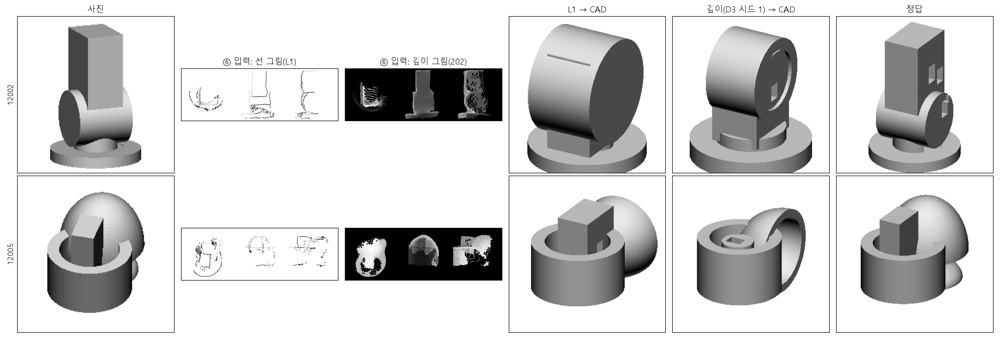

202 깊이 그림 입력 — ⑥ 에 선 대신 깊이를 주면 나아지나 (11-15 · 모델202.py · 도입 관문 D0~D3 · 손으로 정리)
분석
한 줄로
물음: ⑥ 입력을 반쪽 3면도 「선 그림」에서 같은 3D 좌표로 찍은 「깊이 그림」으로 바꾸면 L1 을 이기나?
답: 작은 자료에서는 두 배였지만, L1 과 같은 크기(부품 4.9 만)에서는 이기지 못했다. 두 시드 모두 0.131 대 L1 0.121 로 통과선(0.151)에 못 미쳤다. 판정: 도입 안 함. L1 은 199 그대로.
왜 이 판을 했나
tr199 까지 ⑥ 은 선 그림을 읽었다. 선은 깊이를 잃는다. 화소별 3D 좌표(193b)가 이미 있으니 위 · 앞 · 옆에서 가장 앞 깊이를 그대로 찍어 주면 ⑥ 이 형상을 더 잘 읽을 것이라는 짐작이었다. 이 판은 사용자가 정한 도입 관문(D0 천장 → D1 작은 판 → D2 새 눈 → D3 큰 판)을 처음으로 끝까지 지난 판이다. 목표는 그림 한 장 → CAD 코드, 주 자는 모양 맞음(위상 + 표면 5 %)이다.
바꾼 것 하나
⑥ 의 입력 그림만 바꿨다. 같은 3D 좌표 · 같은 z 방향 고르기 · 같은 182 출발 무게 · 같은 30 바퀴 · 같은 시험. 깊이 그림은 면마다 가장 앞 점의 깊이(0 = 빈칸)를 128 × 128 로 찍고 3 × 3 으로 메운 것이다.
결과

| 관문 | 깊이 그림 | 선 그림(대조) | 통과선 | 넘었나 |
|---|---|---|---|---|
| D0 정답 좌표 · 부품 3 천 · 99 장 | 0.111 | 0.051 | 선 + 0.03 | ✓ |
| D1 예측 좌표 · 부품 9 천 · 99 장 | 0.101 | 0.061 | 0.091 | ✓ |
| D2 뒤 · 198 장 · 시드 1 / 2 | 0.106 / 0.111 | 0.051 / 0.066 | 두 시드 모두 위 · 위상 손실 ≤ 2 | ✓ (McNemar 0.013 · 0.022) |
| D3 부품 4.9 만 · 198 장 · 시드 1 / 2 | 0.131 / 0.131 | L1 0.121 | L1 + 0.03 = 0.151 | ✗ (짝 7 대 5 · p 0.77) |
D2 는 맥락 없는 서브 에이전트 검토였고, 「99 개 · 시드 하나는 흔들림 안」 지적을 받아 198 장 · 시드 둘로 다시 쟀다.
왜 이렇게 나왔나
확인한 것
- 자료가 커지자 몫이 사라졌다. 부품 9 천에서는 깊이가 선의 두 배였는데, 4.9 만에서는 두 입력이 같은 0.12~0.13 에 닿았다.
- 같은 날 디버그 1 에서 ⑥ 은 학습 부품도 6~7 % 밖에 못 맞췄고, 치수 · 자리 칸 손실이 학습과 시험에서 거의 같았다. 입력을 바꿔도 같은 천장에 닿는 것과 맞는다.
- 처음엔 깊이 메움이 작은 구멍을 지워 위상이 떨어진다고 의심했지만, 깊이만 틀린 장과 선만 틀린 장의 정답 구멍 비율이 0.38 대 0.41 로 같았다. 아니었다.
짐작 (아직 확인 안 함)
- D3 에서 위상 맞은 장은 깊이 쪽이 두 시드 모두 11~13 장 많았다(105 · 103 대 92). 깊이가 몸 수 · 구멍 같은 짜임에는 도움이 되는데, 숫자를 못 맞춰 5 % 안으로 못 들어가는 것으로 보인다. 통과선 밖의 관찰이다.
한계
- 시험은 탐침 99 부품 × 렌더 둘. 같은 부품의 두 장은 서로 독립이 아니라 McNemar p 는 낙관적이다.
- z 방향 고르기에 정답 실루엣을 썼다(두 입력 모두 · 채점용).
- 「못 지음」이 D3 에서 L1 2 장 · 깊이 1 장 있었다. 낱개 실패이고, L1 2 장을 다 맞혀도 판정은 같다.
배운 것과 다음
입력 정보를 더 줘도 ⑥ 은 같은 천장에 닿는다 — 막힌 곳은 ⑥ 이 숫자를 맞추는 힘이다.
- tr203: 몸 순서 흔들림이 원인인지(짝 맞춤 손실) — 같은 날 D0 에서 멈춤.
- 다음 제안: ⑥ 은 몸 수 · 종류 · 축만 내고, 치수 · 자리는 3D 점에 도형을 맞춰서(학습 없음 · tr196 천장 0.28).
- 깊이 그림은 위상 쪽 장점이 보이니, 숫자를 기하로 바꾼 뒤 다시 대 볼 만하다.